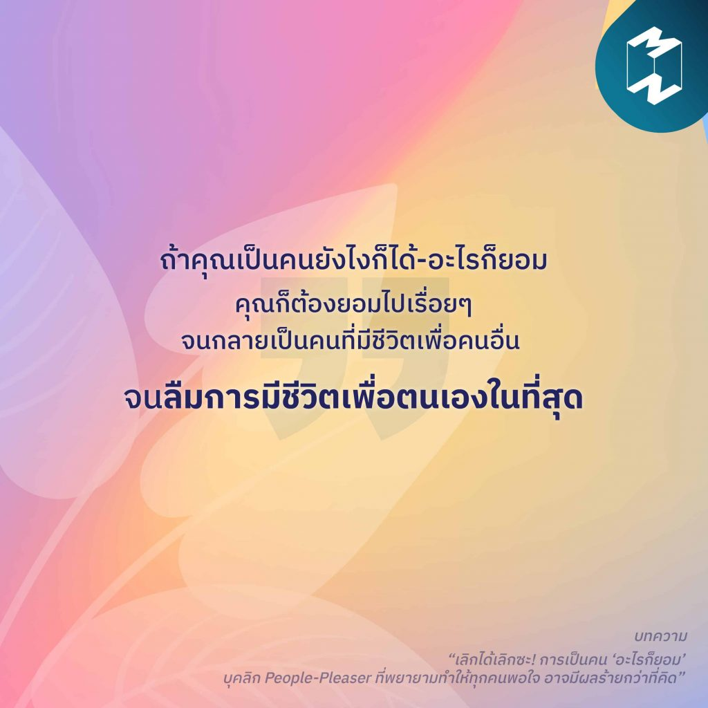

6)“เลิกได้เลิกซะ! การเป็นคน ‘อะไรก็ยอม
“ถ้าคุณเป็นคนยังไงก็ได้-อะไรก็ยอม คุณก็ต้องยอมไปเรื่อยๆ จนกลายเป็นคนที่มีชีวิตเพื่อคนอื่น จนลืมการมีชีวิตเพื่อตนเองในที่สุด” “กล้าที่จะพูดคำว่า ‘ไม่’ กับคนอื่นและยอมพูดคำว่า ‘ได้’ กับตัวเอง แน่นอนว่าการปฏิเสธจะทำให้คนอื่นไม่พอใจ แต่ไม่เป็นไรหรอก คนอื่นๆ จะค่อยๆ เรียนรู้ว่าเราไม่ใช่คนที่เขาจะใช้ทำอะไรก็ได้” เรียนรู้ที่จะใช้ชีวิตให้มีความสุขมากขึ้น ด้วยการเลิกเป็น People-please เลิกตามใจคนอื่นและหันมาฟังความรู้สึกตัวเองกันเถอะ! ให้ปีนี้และปีต่อๆ ไปเป็นปีของเรา ใช้ชีวิตเพื่อตัวเราเองอย่างแท้จริง ติดตามอ่านบทความ “เลิกได้เลิกซะ! การเป็นคน ‘อะไรก็ยอม’ บุคลิก People-Pleaser ที่พยายามทำให้ทุกคนพอใจ อาจมีผลร้ายกว่าที่คิด”